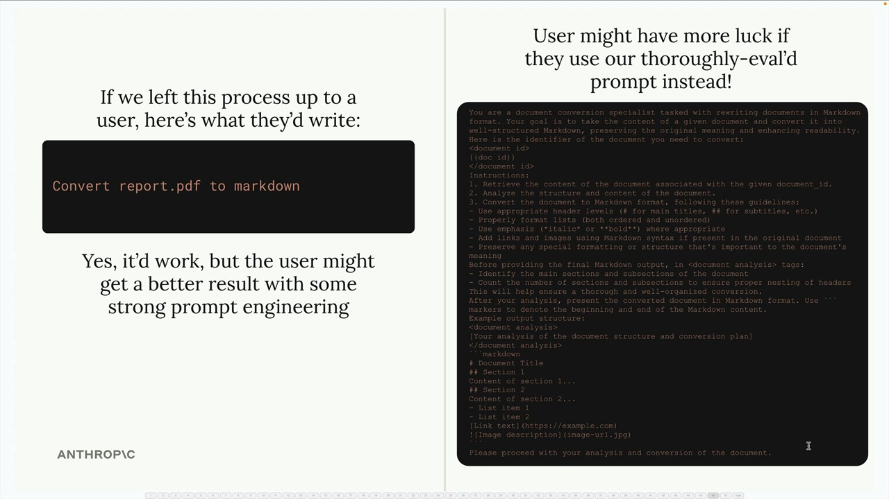
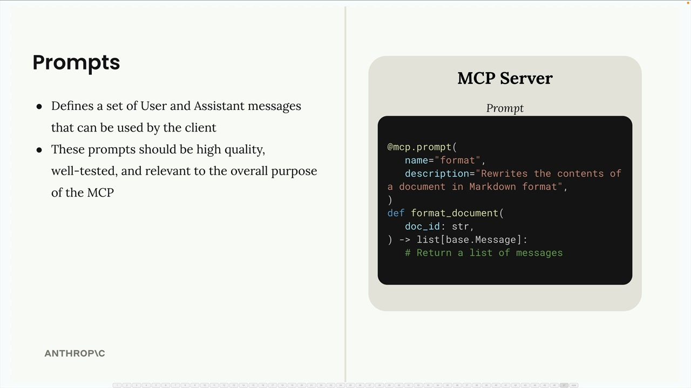
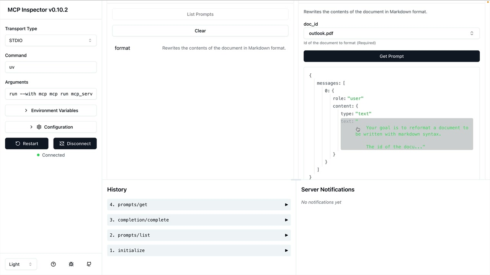

Промпты в MCP
Чему научитесь
Видео 7:44 и текст урока
К концу урока вы сможете:
- объяснить, зачем серверу готовые промпты;
- описать промпт декоратором
@mcp.prompt; - проверить промпт в MCP Inspector.
Видео и текст урока.
Смотреть урок на Skilljar Defining prompts · 7:44Промпты (prompts) в MCP-серверах позволяют задать готовые, качественные инструкции, которые клиенты используют вместо того, чтобы писать свои промпты с нуля. Это тщательно составленные шаблоны, которые дают лучший результат, чем то, что пользователи придумали бы сами.
Зачем нужны промпты
Допустим, вы хотите, чтобы Claude переоформил документ в Markdown. Пользователь может просто написать «convert report.pdf to markdown», и это сработает. Но результат, скорее всего, будет гораздо лучше с тщательно протестированным промптом, где есть конкретные указания о форматировании, структуре и требованиях к результату.

Ключевая мысль: пользователи справятся с такими задачами и сами, но результат будет стабильнее и качественнее, если использовать промпты, которые авторы MCP-сервера тщательно разработали и протестировали.
Как работают промпты
Промпт задаёт набор сообщений пользователя и ассистента, которые клиенты могут использовать напрямую. Когда клиент запрашивает промпт, сервер возвращает список сообщений, которые можно сразу отправить Claude.

format: функция format_document возвращает список сообщений.Базовая структура:
- промпты описываются декоратором
@mcp.prompt(); - у каждого промпта есть имя и описание;
- функция возвращает список сообщений — готовый промпт;
- промпты должны быть качественными, хорошо протестированными и соответствовать назначению MCP-сервера.
Команда форматирования
Вот как реализовать промпт форматирования документа. Сначала импортируйте базовые типы сообщений:
from mcp.server.fastmcp import base
Затем опишите функцию промпта:
@mcp.prompt(
name="format",
description="Rewrites the contents of the document in Markdown format."
)
def format_document(
doc_id: str = Field(description="Id of the document to format")
) -> list[base.Message]:
prompt = f"""
Your goal is to reformat a document to be written with markdown syntax.
The id of the document you need to reformat is:
{doc_id}
Add in headers, bullet points, tables, etc as necessary. Feel free to add in extra formatting.
Use the 'edit_document' tool to edit the document. After the document has been reformatted...
"""
return [
base.UserMessage(prompt)
]
Проверка промптов
Промпты можно проверить в MCP Inspector. Перейдите в раздел Prompts, выберите промпт и укажите нужные параметры. Инспектор покажет сгенерированные сообщения, которые ушли бы Claude.

format с doc_id = outlook.pdf: результат — одно сообщение с ролью user.Так можно убедиться, что промпт правильно подставляет переменные и даёт ожидаемую структуру сообщений, прежде чем использовать его в реальном приложении.
Рекомендации
Создавая промпты для MCP-сервера:
- сосредоточьтесь на задачах, центральных для назначения сервера;
- пишите подробные, конкретные инструкции, а не расплывчатые просьбы;
- тщательно тестируйте промпты на разных входных данных;
- давайте понятные описания, чтобы пользователи понимали, что делает каждый промпт;
- продумайте, как промпт будет работать с инструментами и ресурсами сервера.
Помните, что промпты должны давать ценность, которую пользователям трудно получить самим, — в них ваш опыт в предметной области MCP-сервера.
Дальше
Следующий урок — использование промптов на стороне клиента: слэш-команды в CLI.
Оригинал урока: Defining prompts.